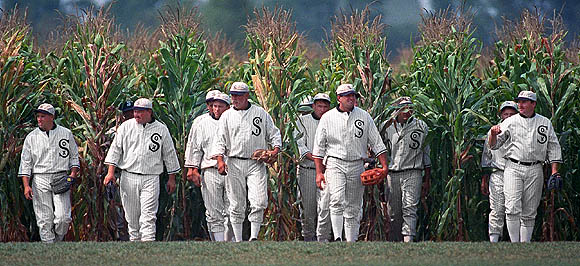

Martin Manley: My Life and Death
Born 8-15-53, Died 8-15-13 , Age 60
- Home Page
- January 1, 2012
- June 11, 2012
- Suicide Preface
- Why Suicide?
- Why not?
- Why Age 60?
- Self-Serving?
- Suicide - How 2
- Gun Control
- Other Suicides
- Other Quotes
- ------------------------------------
- Growing Up
- OMG: I look 60!
- Mom and Dad
- The Heavens
- My Religion
- Chancel Choir
- Victory O Lord
- The Proposal
- Two Marriages
- First Two Loves
- Pictures
- Trips and Travel
- Writing Fiction
- Music & Poetry
- Movies & TV
- Health
- Sleep Deprived
- Living Donor
- Food & Drink
- Creations
- Sports
- KC Star
- KC Tornado
- My IQ
- Synesthesia
- Poker
- Legal
- JOCO, Ks.
- U.S. Financial
- 911 & Conspiracies
- COOL STUFF
- Births & Deaths
WHO WOULD PLAY IN IT?
By Martin Manley

Number = footnotes (see bottom)
1 Chapter 1 (1990, sort of)
2 It had always been an interesting phenomenon, I thought as I watched the game from the bleachers, how impressive 3 Shoeless Joe looked on the field below. Not just because he played for a great team – 107 wins and 43 losses, but because he never seemed to get 4 dirty – not even his feet. Reaching over and taking 5 Annie’s hand, I started to tell her again of the story almost four months ago, on Memorial Day when the spring rains typically threatened to wipe out a home game. She’d heard it before, but like the devoted wife of mine she was, she patiently sat at attention – always listening for some new tidbit she hadn’t heard before.
I was watching our game against the Rebels that Memorial Day when a typical late-afternoon storm began to move in. It didn’t look particularly threatening, so I decided not to send 6 Karin into the house. Besides, the game was a pitching masterpiece and no daughter of mine was going to miss it if I had anything to say about it. Even at nine years of age, she could appreciate how a well-placed curve ball would make even the best professional hitters look like nine-year old sandlot boys.
The White Sox trailed 1-0 even though 7 Claude “Lefty” Williams was pitching another gem. He had allowed only one base runner through nine innings – a lead-off double and two sacrifices in the fourth inning. Williams would have a perfect game going, but the left field umpire ruled the double, which Shoeless Joe tracked down, was a trap. Clearly it was caught. Everyone could plainly see he had the glove under the ball. But, old man 8 Denky couldn’t see the nose on his face unless he painted it black first. Everyone knew it, but here he was still making crucial calls in close games!
Leaning back on the bleachers and closing my eyes as though somehow I could recall better in the dark, I went on with the story… When the White Sox came to bat in the bottom of the ninth, the sky started getting dark and ugly. I reconsidered my decision to let Karin stay outside, but the game was… well, it was intoxicating. It was almost as though I knew something special was going to happen.
It had been almost 9 nine months since I completed the stadium, but we were only able to watch the last few weeks of the previous season and the first two months of this season. I was holding onto every minute – hoping to see as much magic from the White Sox as possible. No matter what, I didn’t want to miss a comeback because of some ominous clouds!
10 Mark came running over and interrupted my story. “Ray! When the game is over”, he said, “I’ve got some good news for you.” He knew I didn’t like being interrupted and just because he was Annie’s brother didn’t make it any better. Once I started watching the Sox, my world was pretty much closed to outsiders. Even in retelling the story of a game back on 11 May 28th, I could barely also concentrate on the one taking place in front of me.
Annie had missed the game on Memorial Day because she thought it was better to spend some time with her family. Originally, they were skeptical about my baseball field and they sure didn’t believe I’d been told by some mysterious voice to build it! Another way of putting it is… they thought I was nuts – as did just about everyone in town. I never blamed them for it, but once they learned there were actually real games being played by real players, townies came flocking to see what the excitement was all about. Attendance had been steady at about 2,000 per game and I had to build new bleachers just to keep up. Even though they had come to realize something amazing was going on in a cornfield in Iowa, Annie’s family (except for Mark) tended to stay away. I think they were half confused and half embarrassed. Either way, Annie had to miss a game to see them and it just so happened to be on Memorial Day, 1990.
I brushed Mark off, barely hearing what he said. Who knows what kind of “good news” he was referring to? Normally, I would have tackled him to make sure he told me on the spot, but this was during a White Sox game in September and during my retelling of another game in May. That’s a real double-header, I thought to myself!
“Go on”, Annie said, taking a step below me on the bleachers so she could look into my eyes. It reminded me briefly of how our whole relationship had changed since our daughter Karin 12 fell off the same steps last year – just after I finished building them. Mark admits that day… that hour… that minute… changed his life – that it was a tipping point. Instead of being someone fixated on the bottom line, he realized life was anything but; life was something that floated majestically on the waves of destiny and we were all just along for the ride – going wherever the wind predetermined.
Mark comes to every home game. He usually sits over by left field shooting the bull with 13 Joe Jackson whenever a ball is hit near the foul line. Personally, I’ve never been able to leave the right side of the diamond. Sure, I built the entire stadium and all the magic that goes with it – even 14 redemption. But, 15 Doc Graham saved Karin’s life that day right at the foot of these very bleachers. How do you walk away from that?
Besides, I always felt like right field was where I should be closest to. It was, after all, the Sox’ weakest spot on the team and I guess I felt like if I were closer to it, maybe it would make a difference. 16 Nemo Leibold was the right fielder for the Sox in the 1919 World Series. He was one of three starting players not found guilty of throwing the Series. I guess that means he was a real White Sox rather than a Black Sox as the rest of the group had been labeled.
Leibold was pretty good, but he and the other clean Sox never showed up on my field. Maybe he just didn’t like corn. Who knows? As a result, the Sox had put up a number of replacement rejects in right field hoping for the best. Admittedly, when a team is as good as the Sox were this year, it didn’t matter much who was in right field. But, it mattered to me. I didn’t want to see them ever lose a single game!
“Go on”, Annie said again, interrupting my thought and pounding her fist on the top of my knee just to get my attention. Okay, so there we were watching this tense game. It was the bottom of the ninth and the Sox trailed 1-0. The Rebels were the defending champs and we had to expect to beat them – especially at home – or we weren’t going to win the pennant this year.
In retrospect, I realize how silly I was then because now we led them by 14 games with only 12 to go, but at the time we were in a dead heat – tied for first place. Early in the season our pitching was great. We had 14 shutouts in 39 games and a good record of 24-15. But, our hitting was far from being what it needed to be. With the exception of Joe, no one was consistently contributing with the bat.
In the ninth inning on that Memorial Day, Joe was coming up fourth in the order. I knew someone would have to get on base to give us a chance. 17 Swede Risberg led off with a routine grounder to short. One up, one down. Next came 18 Freddy McMullin. He hit a pop fly to second on a 2-0 count. I remember wondering why this guy was swinging. We need a base runner, for crying out loud, any way we can get one. Oh well, two up, two down.
We were going to lose this game and any second Mother Nature was going to show us no respect by dumping on us. What a way to lose – because of a bad call by Denky. What a combination – Mother Nature and Don Denky. They should get married. Then, Mother Denky could wash the black off Don’s nose so that he could claim he didn’t have one.
Joe Jackson was, of course, suspended from the White Sox and the game of baseball in 1920 – the year after the World Series scandal. There are many who believe Jackson was never involved – that he simply said he was involved to avoid the pressure. 19 Baseball historians point to the fact that Jackson’s batting average in the World Series was a stellar .375. He even hit the only home run in the entire eight-game series and he didn’t make a single error!
Some argue that Jackson was successful at the plate only when it didn’t matter, but that argument has little merit. The fact is Jackson was semi-illiterate and may have been caught up in something he didn’t fully understand. It’s hard to believe he was smart enough to figure out when to get a hit and when not to. He simply played for the love of the game.
When the Sox were behind four games to one in the best of nine in the 1919 World Series, it meant only one more loss would do the trick. In what could have been the deciding moment of the series, the Sox were tied with the Reds 4-4 in the 10th inning. One would think Jackson would have simply struck out. Instead he got a single and Chicago beat Cincinnati 5-4 to stay alive.
The White Sox were on the ropes that game and the next two yet Jackson had two hits in each of the three games and was doing everything he could to win.
| AB | R | H | RBI |
Game #6 | 4 | 1 | 2 | 1 |
Game #7 | 4 | 0 | 2 | 2 |
Game #8 | 5 | 2 | 2 | 3 |
With his team’s back against the wall, Shoeless Joe Jackson was 6/13 (.461) with three runs scored and six RBIs. Nope, I didn’t believe he was guilty.
Besides, how could Jackson have thrown the series when he hit .375 while Nemo Leibold didn’t even get a slap on the wrist even though he was only one for 18 and batted .056?
“You’re daydreaming again”, Annie said with a bit of frustration. She was right, but I enjoyed it. Next up was the pitcher Lefty Williams and no one in their right mind would let him hit with the game on the line. He wasn’t as bad a hitter as he used to be, but I remember a 20 stretch from 1917-1918 when he was 0/44! His last hit was a nubber. The only reason he reached first base is the opposing pitcher fell off the mound and couldn’t field it.
Hitting for Williams was a new kid the team had just acquired. He wasn’t very big, but he had a big heart. He wasn’t very fast, but he had a sixth sense - knowing when to run and when not to – or at least that’s what the folks from Ottumwa said about him. 21 Ottumwa is just a couple hours south of here.
22 W. E. Shaffer was about to get his first at-bat for the Sox. Walter Eugene was his real name, but everyone just called him “Corporal”. When he joined the team a few days earlier, Ray learned about the kid. It seems he had been in the National Guard after the Korean War and was playing for one of the local teams around Ottumwa when he was wrongly accused of killing a young girl. She fell or was pushed out of a window to her death and someone said he did it. Shaffer claimed he was innocent and no evidence was found to the contrary.
Even so, the girls’ father was rich and he wanted someone to pay. Shaffer wasn’t the kind of kid to put up too much resistance, so when pressed, he agreed to a compromise. Rather than going to trial before a jury, he accepted a discharge. That was in 1958. I don’t even know if the kid is dead or alive. All I know for sure is that his mother is a very old woman who lives in Ottumwa, but made the trip to my field just to get a chance to see her son play for the Sox.
Here he was, 26-years old and coming in to bat for Lefty Williams. I couldn’t help but notice how pudgy he looked for a ball player. The count went full before Walter even thought about swinging. He was a smart kid. With two outs in the ninth inning and down by a run and nobody on base, the only thing that mattered was getting on – and a walk would be just fine. He fouled off two more pitches just protecting the plate and then… ball four. I was thrilled. Joe was going to come up to bat.
If we lost, we could at least say we had a chance to tie it. Ideally, of course, he would hit a screaming liner off the top of Dinky’s head for an inside the park homer, but that was dreaming. This was the first game Joe had been the lead-off hitter. As player-manager, he decided to bat first instead of third or fourth for a very logical reason. He told me, “If I bat first, I may come up one more time in a game. Since no one is getting on base in front of me anyway, I may as well try to drive myself in!” It was unorthodox, but it looked like a good move now.
Just as the pitcher delivered his first offering, 23 Walter bolted back to the safety of first base, lightning struck out near 24 Eddie’s grave and Shoeless Joe whacked the ball to the gap. All in that order separated by about two seconds each.
Shaffer jumped to his feet and leapt off first base like a young bird just learning to fly. He started hustling toward second and so did his dog 25 Hook. Four months later, it’s become a common sight to see Hook run the bases with Corporal, but that was the first time I had ever seen a dog on the field – during live play.
Suddenly, all hell broke loose. The thickest 26 wall of water I’ve ever seen came down right on top of us. Karin snuggled under my jacket, Walter kept running, and the Rebels’ center fielder fell down. Shoeless Joe was gaining on Corporal. Hook was in doggie heaven running around the infield in the rain.
I remember wondering for the briefest of moments why Corporal dove back to first when the pitch was to home. That could be a costly mistake since Joe was on top of him by the time they reached third base. The left fielder had retrieved the ball and was throwing to the cutoff man when the most amazing thing happened.
After a pause, Annie said… “Bring it home, baby.” I just loved that. It had become our thing. I would pause in telling the story when both were at third base and she would call me “baby”. Actually, the “baby” part was a later add-on. She just wanted to hear herself say “Bring it home.” She thought she was being clever – home plate and all.
I couldn’t believe my eyes, but Joe literally grabbed Walter in a bear hug and kept running for home. Thinking back on it, I can’t help but laugh – almost hysterically – seeing Corporal’s feet still running in mid air while Joe was the only one touching ground. I could hardly see through the rain, but I knew I was watching something incredible. I jerked my jacket off Karin and said… “Look, look, look!”
The ball was coming in from left field while Shoeless Joe Jackson was carrying Walter Eugene “Corporal” Shaffer toward home plate.
Then, everything seemed to move in slow motion. I wiped my eyes and realized it was over. Just as the rain had come, it had gone – within seconds. The 27 sun was bursting through a hole in the clouds. Everything was suddenly so light, so bright, so clear.
I could see there were four bodies piled at home plate and three of them human. The home plate umpire, 28 Kenny Landers, held us all in suspense and then yelled “safe” – and then a second later yelled “safe” again! Wild jubilation swept the team. They were jumping up and down and rushing the field. Karin and I were jumping up and down. Hook was running around in circles doing what dogs do when confused – barking deliriously.
We won 2-1 because Shoeless Joe hit a two-run inside-the-park homer in the bottom of the ninth inning with two outs… and he did it by literally carrying Corporal across home plate… and the Sox have been in first ever since. If you didn’t see it, you would never have believed it. But then the 1,300 paying fans at the game, most of who were still there, know it to be true. It’s just that none of them can tell the story the way I can. At least that’s what Annie says – and who could doubt her objectivity?
Still, if I had to pick a single thing about the game that I can’t forget and can’t explain, it is that when all the players got done slapping each other’s butt and high fiving until their hands hurt, I noticed something…
…Shoeless Joe’s uniform was as clean as if it had just been washed. That didn’t seem possible. He dove for a ball - the so-called double - in the fourth inning and he crashed into home plate in the mud. I’m sure Hook jumped on him a time or two during the fracas. Yet, his uniform was as white as rice. I tried to see Corporal’s uniform, my 29 dad’s or any of the players, but they had their backs to me as they raced to the centerfield exit still cheering.
“What do you think?” I said to Annie. “It gets better each time I hear it.” That’s something she said after every retelling. At some point, it can’t get any better – right? Is she a great wife or what? She went on… “I wonder if Eddie summoned the lightning and the storm if only for a few seconds. If that center fielder hadn’t slipped in the rain… well, who knows? We would have probably lost and not taken over first place. And, where would we be today?” Annie is a very thoughtful person. That ninth inning gave new life, a rebirth if you will - to this team. And, now we have clinched the pennant with two weeks to go.
Annie took my hand again and asked me to go see what Mark wanted. I told her he would be over soon since we had this game in the bag 7-2 with only one more inning to play. “Besides, I said, I just like sitting here in right field.” The truth is I don’t like it exactly, but I feel like this is where I belong. I prefer it. That sounds better. “I’m heading in” said Annie. “I’ll tell him you’re anxious to find out what he wants.”
I sat there watching the last inning calculating in my head. We were about to go to 108-43 with 11 games left. If we could win nine of them we would break the cross-town 30 Cubs’ record of 116 wins in 1906. Well, we wouldn’t exactly break it, we would surpass it, since… what makes a record official?
In any event, most of the players had been shooting for it since the pennant had been decided a couple weeks ago. The team was heading for a road trip later tonight for eight games. The final three would be at home – here in my ball park. I expected an overflow crowd for all three games and probably a new attendance record each day.
It was asking a lot to win 9/11 when there was so little at stake. Yet, Shoeless Joe had been playing harder every day. It was as if he had prove that he was the best – that the Sox were the best… ever.
Chapter 2
I was still thinking about that Memorial Day comeback, the lightning striking out by Eddie’s grave and the new life it pumped into the team when Mark came running over. “Guess what?” he said breathlessly. “What”, I replied. Mark went on to tell me we had a new right fielder. Joe had told me before the game that 31 Bump was history. His attitude was bad anyway. “The new guy is – are you ready for this – 32 Eddie R. Hobbkus – another Eddie.” I couldn’t believe it, Hobbkus had been 33 missing for… ever. “Who found him?” I asked. “34 Salinger said he tracked him down in some little village in the Tibetan mountains – 35 Ash-Laring or something like that. Anyway, Salinger says he’ll be with the Sox by the time they get back home for the three-game series with the Spoilers.”
I ran to tell Annie and Karin the news, but Mark had already beaten me to it. The four of us settled in and talked well into the night about that incredible year Hobbkus had in 1948 with the Cubs – although they were known as the 36 “Knights” for that one season. 37 One version has Hobbkus accused of selling his honor for money and kicked out of baseball. Another has him resisting the temptation and becoming a local hero. It was hard to know what was true and what was not. The only thing anyone knew for sure is that he’d been missing ever since.
Salinger was taken by the story. He had researched it and had always doubted Hobbkus’ guilt. He believed he was being blackmailed into throwing a game for reasons he could only speculate upon. Rumor had it that one of Salinger’s fellow reporters – a certain 38 Max Mercy, had evidence which, if it were made public, would hurt Hobbkus even more than this scandal. Perhaps Eddie would tell us the truth when he arrived.
11 days later, Friday night
There he was, 39 Eddie R. Hobbkus (#9) in right field. It should be an exciting series. The Sox went 6-2 on the road trip and now had to win all three games against the Spoilers to pass the Cubs’ record of 116 wins in a season. Salinger told me before the first game of the series that Shoeless Joe had become more and more introverted while on the road. He hadn’t spoken to Sallinger at all on the trip and kept talking about not jinxing it when the other players made reference to the 117-win goal. Being 40 outgoing himself, Sallinger simply couldn’t understand this type of behavior.
Apparently, someone said they thought it was unfair to bring Hobbkus to the team at such a late date, that he hadn’t earned the right to play for a championship team. The only thing Joe had to say, according to Salinger, was this: 41 “Did you not agree that a championship would be the just reward for your labor? Am I not allowed to choose who will play and who will not? Or do you begrudge my generosity?” No one talked about Hobbkus’ 11th hour arrival after that.
During the next three days I got to know Eddie Hobbkus’ pretty well. I started to talk to him during the first game while he was in right field, but he was in a different world when he played. I quit after the first inning. Instead, I met with him after the game.
Hobbkus told me the story of how he left to go to Chicago in 1933 with his friend Sam Simpson, and how he met Harriet Bird and how he drifted for 15 years, and how he almost threw the final game, but then something about his bat breaking. He was afraid of the publicity from the other story – the one Max Mercy would tell. I didn’t understand the whole explanation except that I could tell he was being sincere.
The Sox won the first two games of the series 1-0 and 11-6. After the second game, Eddie hollered up to me that he better say his goodbyes now since he might not have a chance after the last game. I replied that, even so, there would be next year. He just kind of stared through me for a moment as though I weren’t there.
“I’m not completely innocent, you know.” he said, wiping some dirt off his knees. “I’ll never be completely free of the past. What discourages me is that 42 I could have been the best – the best there ever was – the best there ever will be. I still hope to be good, but I know I’ll never be great. So long Ray Kinsella.” “So long Eddie Hobbkus.”
Hobbkus turned one last time and said, “It’s not really Hobbkus. My dad nicknamed me that because one day he hit a line drive off my leg when I was pitching to him. I hobbled around for a week while he had a big smile on his face. He knew he had hurt my spirit more than my body. It was getting to where I could strike him out nine times out of 10, so this was his last moment of glory before the 43 son replaced the father.” Suddenly, he took off in a sprint toward right field.
“What is your last name?” I hollered. But, he had already taken his place and there was no talking to him now.
The tension was thick. You could cut it with a knife. There were 44 5,850 fans there to watch. I decided to try to get as many people as possible to the last game of the season and so I didn’t charge a cent. People were everywhere and cars were parked along the road for over a mile in both directions. I even heard a few people walked to the field from 45 Dyersville – the nearby town. Everyone appreciated the gravity of the game. 116 wins had tied the Cubs’ record, but what self-respecting White Sox fan didn’t want to beat the Cubs?
The game was close. The Spoilers knew what was at stake and they didn’t want to be a footnote in baseball history. After four innings, the Sox trailed 3-1. We tied it up in the sixth where it stayed until the ninth. With two out and two on, the Spoilers’ best player, 46 Harry Arndt, drove a rocket to the deepest part of left-center field. It looked for all the world the Spoilers were going to take the lead, but Joe Jackson managed to track it down only because of his incredible speed. And, that ended the threat.
In the bottom of the inning, as so often seems to be the case, Shoeless Joe, the defensive hero of the top half the inning, led off. Fittingly, he drove a double down the line. 47 Buck Weaver then grounded out, moving Joe to third. 48 Happy Felsch struck out on three pitches. In the clean-up spot was Eddie Hobbkus. I couldn’t get over how intense he appeared. Sure it would be a big win, but… He let the count go to 2-1 before he blasted one to deep centerfield. The Spoilers’ centerfielder, 49 Homer Smoot, turned and raced back, back, back. Smoot leaped as high as he could…
CHAPTER 3 (1993)
“Daddy!”… “Daddy! Uncle Mark wants you.” I could barely hear Karin from the house. I loved to come out and stand in my cornfield – especially this time of the year. Annie thinks I’m weird. So does everyone else, but I’ve been doing it ever since I first started hearing the voice four years ago.
I’ve always fantasized about building a baseball stadium – right here in Iowa. Wouldn’t that be something? They would really think I was a nut job then. Maybe I am a little crazy. I’ve been in love with baseball ever since I was a boy and played catch with my dad.
When I was older, I used to feel like I had to include everyone in the game. When the girls wanted to play, I’d choose them for my team. When the boys, who played like girls, wanted to play, I’d choose them too. I admit it. I like to make others happy. I just wish there was a way to make everyone happy and build my baseball stadium at the same time, though not likely.
“Daddy, come on!” I love to come out here - especially in the spring. I love to watch things grow. Look at Karin. She’s nine now. When I was her age, I had baseball cards of all the great players – Ruth, Hodges, Gehrig, DiMaggio. My friends and I used to put them in a hat and draw them out to make teams. Then, we’d play imaginary games. I would be the 1919 White Sox and they would be the 1925 Yankees or the 1955 Dodgers. I’d be anyone I wanted to be. I’d imagine anything I wanted. Why? Because I could.
Even now, I would fantasize about being involved with the Black Sox – interviewing players, getting the real scoop about their guilt or innocence. I’d play games in my head, even seasons. Once I had the Sox winning 116 with just one to play. One more win for the record and then the Cubs would have to look up to the Sox. It doesn’t get any better than that. I see it often. I see it right now… bottom of the ninth, the crowd cheering, Hobbkus at the plate... a long fly ball... I guess I never grew out of the fantasy. All I know is that I love baseball and somehow baseball loves me.
"DADDY!"
Walking into the house I saw Karin, Annie, Mark and my dad, John. He was pushing 80 now. Sometimes I reminisce about what it would have been like these last few years without my dad. When he left us, I was a young man. Mom told me he had died. I know she did it so that I wouldn’t feel like it was my fault that he left, but it happened while I had was traveling on my own after a bad exchange with him. I felt horrible that I never had a chance to tell dad that I loved him. Then, two years to the day after mom died, he showed up at the house. That was four years ago. After the shock, we welcomed him into our home and he’s been here ever since. 50
Sunday mornings were family time. At his advanced age, dad’s eyesight was poor and so we would read to him. The problem was that he could read the headlines himself in the newspaper and naturally, he wanted to know about every story. If ever there were proof that the headline did its job, it was with dad.
He pointed to a headline – one by that sportswriter, Salinger. ‘You know how much I’ve liked him since he used the 51 Kinsella name in that fictional piece about athletes playing for redemption.” I had to respond. “Dad, it isn’t like he meant you or me. A name is just a name.” I like Salinger alright I thought to myself, but sometimes his theories were a little farfetched. He was always trying to make something out of nothing – to make square pieces fit into round holes. But, then isn’t that what all sportswriters do?
Yielding to the moment, I said to Mark “Well, don’t leave us in suspense. What has he got to say this week?” My brother-in-law had already read the piece so he decided that rather than read it out loud word-for-word, he would summarize it. That was okay with me. Although nobody told a story better than I could, Mark wasn’t bad.
“The article is about the King – Ruth himself. Salinger claims he was digging through some old files in the late 40’s and discovered some unreported notes he had taken. He says that in 1965 he almost quit writing after they tore the 52 Polo Grounds down. Out of disgust, he just threw a bunch of baseball notes into an old locker and just now discovered them.
“He says that Babe Ruth really had two lives in baseball. His first was before 1920 and the second after that.” Annie interrupted. “Wasn’t 1920 Shoelesses’ last year.” I was about to educate her on pluralizing words that end in “s” when dad mumbled something about a “conspiracy”. Then, Mark managed to answer Annie’s question before I could say anything. “That it was”, Mark said with a gleam in his eye – proud to be the uncle of such a brilliant kid. After all, how many nine-year old girls know who Shoeless Joe was, much less what year was his last? Once his pride was fully satisfied, Mark went on. “The Black Sox managed to play another year together after they threw the 1919 World Series because there was no commissioner yet to suspend them. But, that’s not part of this story.”
53 “1919 was also Salinger’s birth year in addition to Babe Ruth’s last year with the Red Sox. Some say, he not only cursed the Red Sox when he left in 1919, but that he had left his heart there as well.” I never figured there could be a real thing as a curse, but considering the White Sox threw the World Series in 1919 and the Bambino left the Red Sox in 1919… maybe there was such a thing as a curse - a "Sox" curse. After all, the White Sox won the WS in 1917, the Red Sox in 1918 and neither Sox team had won the World Series since! That’s 75 years, three quarters of a century!
54 “He was a young man in 1919 and mostly known as a pitcher. Salinger goes on to say that Ruth was a very suspicious guy. He didn’t trust anyone in those later years with New York. This was strange because, in Boston, he had been everybody’s pal – always good for a laugh except when he had to sit in the dugout or the bullpen on days when he didn’t pitch. Had the designated hitter rule existed in those days, he might be considered the greatest pitcher of all time as well as hitter. Anyway, Salinger says that when he got traded to New York in 1920 a lot happened to him and he clamed up to the press.
“Now that he could devote full time to hitting, he also began running faster.” I couldn’t resist, “Probably practice from running from all the muggers in New York”, I quipped. Just as quickly, I apologized for interrupting before Mark could accuse me of doing the very thing I hate the most. “Sorry, go ahead”.
After a long pause in which Mark wouldn’t take his eyes off me… “Says he grew so weary of all the concrete in NYC that when he came to Yankee Stadium, he would take his shoes off and run in the outfield grass just to make him think he was back in the front yard of his home. The quote he has from Ruth was something to the effect of 55 “the thrill of the grass”.
Sensing he was done, Annie blurted “That kind of reminds me of Shoeless Joe”. I chimed in. “Dad, you used to talk about Shoeless Joe all the time when I was a kid – about him wanting to play again.” Dad just nodded approvingly. “Whatever happened to him?” asked Mark.
Suddenly, a rush of energy overcame my dad and he couldn’t resist telling his own story. “After Jackson was banished from the Sox in 1920, he virtually disappeared from the face of the earth for almost three decades. Some accounts had him going back home to the hills of South Carolina and some to the Bronx. One legend had him traveling to the Himalayas. Most folks don’t know where he was until he showed up for Ruth’s funeral in 1948. 56 Said he had one good year left in him and was heading to Chicago. That’s all anybody knows.”
Mark finished the article and everyone kind of drifted their own way. As I sat there staring out into the cornfield, I could envision a baseball field in the moonlight, with players and bats and balls and bleachers. I could see it. I could smell it. I could touch it. I could taste it.
I thought about how much I had come to love the farm, the spring, Iowa… and that baseball stadium I had always dreamed about even if it was only in my imagination. I know I’ll never build it. I’ll never be that lucky. But, I have something better. 57 I have my dad and I finally got to say how sorry I was for what I said. Even at 79, he can still play catch and he still remembers the 1919 White Sox from when he was a five-year old kid – the same age as Karin was when she fell off the ladder helping me paint the house. That was the day after dad showed up. Karin almost died. Thankfully, Doc Gramm was helping us paint that day and he saved her life.
I still hear the voice sometimes when I’m out in the corn, but not as loud and not as often. I’m not quite as motivated to chase the dream as I was, say… four years ago when I came extremely close... Annie and Mark have been telling me all along that we simply can’t afford to furrow over a crop for a baseball stadium and I don’t want to be thought of as nuttier than I really am. Besides, who would play in it?
END
----------------------------
1 The year is really 1993 – which is four years after Field of Dreams movie came out. This is a follow up to that movie. It might seem confusing because in the beginning of the story, Ray Kinsella indicates that it is just nine months after he created the field – thus nine months after the movie or 1990. But, that is actually a clue to what happens.
2 Narrated by Ray Kinsella
3 Shoeless Joe Jackson was a member of the 1919 White Sox – later labeled the “Black” Sox because eight players intentionally lost the 1919 World Series and were later banned from baseball. The book Shoeless Joe and the movie Field of Dreams are about Joe Jackson’s attempt at redemption.
4 The idea of Shoeless Joe never getting dirty is based upon the fact that he was “clean” – not guilty of throwing the 1918 World Series. He wasn’t stained. In fact, no stain would attach itself to him. However, in the mind of the world, he was still guilty – a member of the “Black” Sox. Ironically, in 1922, Jackson opened a dry cleaning business in Georgia.
5 Annie is Ray’s very supportive wife from the movie Field of Dreams.
6 Karin is Ray and Annie’s daughter from the movie Field of Dreams.
7 Lefty Williams was a pitcher on the 1919 White Sox and was one of the nine players kicked out for throwing the 1919 World Series.
8 Denky is, of course, Don Denkinger – the umpire famous for making a mistake on a play at first base in the ninth inning of game six of the 1985 World Series which greatly contributed toward Kansas City coming back to win the game and tie the series 3-3 with St. Louis. The Royals won game seven in a romp.
9 Nine months is the amount of time from when the stadium was completed the season before and the first two months of the next season. The story is being told of a Memorial Day game. We know that Field of Dreams was in the late summer because the corn is about ready to harvest.
10 Mark is Annie’s brother.
11 May 28th was actually Memorial Day in 1990.
12 Karin was five years old when she fell off the steps of the right field bleachers in the Field Of Dreams. That was in 1989. She is six at the time of the first part of the story and nine by the end of the story - 1993.
13 Shoeless Joe Jackson was a left fielder for the White Sox during his MLB career.
14 Redemption. This entire story as well as the book and movie is about redemption.
15 Doc Graham is Doctor Archie Graham from the movie named after a real player. Archie had one appearance in the field in an MLB game, but never came to bat – one of 54 official non pitchers so far in MLB history. Graham was the first of the 54 in 1905.
16 Nemo Leibold was indeed the right fielder for the 1919 White Sox and he was not charged with throwing the series even though he was only 1/18 at the plate. Leibold and the other clean Sox never played on Ray’s field because they didn’t need redemption.
17 Swede Risberg was the Black Sox’ light hitting shortstop. I have him batting seveth in the lineup.
18 Freddy McMullin was the Black Sox’ utility infielder. He had one home run in his six-year career. I have him batting eighth.
19 Jackson batted .375 in the 1919 World Series with a home run. All stats regarding the 1919 World Series are accurate.
20 Claude Williams actually did go 0/44 in a stretch from 1917-1918.
21 Ottumwa Iowa is 115 miles SW of Dyersville, Iowa which is just a few miles from Ray Kinsella’s farm.
22 Walter Eugene “Corporal” Shaffer is a compilation of two people – one fictional and one real. Walter Eugene “Radar” O’Reilly was a corporal in the television show M*A*S*H. He was from Ottumwa, Iowa. Don Shaffer (B. 1929) is from Ottumwa and claims to be the person Radar was patterned after. Although the original author of M*A*S*H more or less denies it, the facts strongly suggest Radar was patterened after Shaffer.
23 Walter dove back to the safety of the base before the lightning struck. This was a talent that is consistent with the character “Radar” in M*A*S*H and the symbolism is that the base represents safety from the threat.
24 Eddie’s grave is that of Eddie Cicotte – a pitcher for the 1919 Black Sox. The back story is that Eddie died in the early spring of 1990 after the stadium had been built. To show respect, Ray and the other members of the Black Sox buried Eddie just outside the right field line and just beyond the edge of the cornfield. Eddie was never given the full redemption from the 1990 season because he was the blackest of the Black Sox – losing two 1919 World Series games as a pitcher, pitching ineffectively in a third and receiving the most crooked money from the fix.
25 Hook, the dog, is named after Richard Hooker – the pen name for Richard Hornberger – the author of M*A*S*H. Hornberger was Shaffer’s colonel as well as being a surgeon in the Army during the Korean War at a M*A*S*H unit. In the TV series Radar is extremely fond of his colonel Sherman Potter and so when Shaffer came home, he named his dog after his former commander.
26 Wall of water is a metaphor for baptism where sins are forgiven.
27 The Sun bursting through the clouds is symbolic of redemption.
28 Kenny Landers represents Kenesaw “Mountain” Landis, a former federal judge and the first commissioner of baseball who was appointed for the 1921 season. His redemption for wrongly banning Shoeless Joe was in making the safe call to Jackson to win this game.
29 Dad – John Kinsella, the “dead” father of Ray Kinsella.
30 The Chicago Cubs do, in fact, hold the major league record for most wins – 116 in 1906.
31 Bump is Bartholomew 'Bump' Bailey, the fictional character in The Natural who is lazy and doesn’t hustle. In the movie Roy Hobbs is sent in to replace him and that’s when Hobbs gets his second chance.
32 Eddie R. Hobbkus is also a compilation of two people – one fictional and one real. Roy Hobbs is the right fielder in the movie The Natural and Eddie Waitkus was a major-leaguer who played in the 1940’s and 50’s. Waitkus is the presumed player that Hobbs was based upon in the story The Natural.
33 In The Natural, Hobbs is a middle-aged player who comes out of nowhere for a brief moment of glory. Originally, he was a promising pitcher, but his new fame was with the bat. This is analogous to Babe Ruth. After his early career in baseball, Hobbs goes missing for 15 years before he comes back to baseball.
34 Salinger is J.D. Salinger, the writer. In real life, he became a recluse. In the book Shoeless Joe (which Field of Dreams is based upon), the author W.P. Kinsella seeks out Salinger in an effort to “ease his pain” from living a lonely life. In the movie, the Salinger character is replaced by a fictional writer (also a recluse) named Terrence Mann.
35 Ash-Laring is an anagram for Shangri La – a fictional Garden of Eden and in the Kunlan Mountains of China where life is perfect and where there is no further need for redemption. However, when a person leaves Ash-Laring, they still need redemption if they have not already attained it.
36 The “Knights” were Roy Hobbs’ team in The Natural, but it was based upon Eddie Waitkus and he played for the Chicago Cubs. The story has the Cubs changing their name to the Knights for one season 1948.
37 Unlike The Natural where Roy Hobbs resists sin (deception) for money, in this story, it is unclear – or at least it is unclear to Ray Kinsella. The point is that Hobbs still needs redemption and the only way that would be true is if he wasn’t completely innocent in The Natural.
38 Max Mercy is a character from The Natural. He is a sportswriter who knows of Roy Hobbs’ past and holds it over him.
39 Roy Hobbs plays right field in The Natural.
40 Tongue in cheek. Salinger was, of course, an extreme introvert.
41 Paraphrased from Matthew 20:13-15
42 In The Natural, Hobbs laments “I coulda broke every record in the book. And then when I walked down the street people would've looked and they would've said there goes Roy Hobbs, the best there ever was in this game.”
43 “Spirit”, “Son”, “Father” – religious overtones.
44 5,850 in attendance is 117 (wins) times 50.
45 Dyersville, Iowa is two miles west and 1/2 mile south of Field of Dreams.
46 Harry Arndt played for the St. Louis Cardinals in 1906. The Cards (Spoilers) played the Cubs in the last game of the season. Chicago had 116 wins already while St. Louis was terrible (52-98). Harry Arndt wasn’t particularly good, but he was the best player on the Cardinals and the game ended in a 3-3 tie. This was on October 7, 1906 and the tie prevented the Cubs from winning 117 games. Naturally, Arndt is the obvious player on the Spoilers with the chance to prevent the other Chicago team from reaching 117 wins.
47 Buck Weaver was the Black Sox third baseman – a high percentage hitter with little power.
48 Happy Felsch was the Black Sox centerfielder – a high percentage hitter with moderate power – the perfect batter in the three slot.
49 Homer Smoot was the centerfielder for the 1906 St. Louis Cardinals.
50 In Field of Dreams, Ray’s dad is dead and he only meets him as one of the players. That’s the premise upon which the first part of this story operates. But, in “real life”, it’s 1993 and the field was never built and Ray’s dad never died.
51 Of course, instead of the fictional J.D. Salinger using the fictional Kinsella name in a story on athletes and redemption, it was the real W.P. Kinsella using the real J.D. Salinger’s name in the story Shoeless Joe.
52 The Polo Grounds in NYC were torn down in 1964 and the real-life Sallinger last published an original work in 1965.
53 J.D. Salinger was born January 1st, 1919.
54 In Babe Ruth’s first six years – those with Boston from 1914-1919, he had an 89-46 record as a pitcher with a 2.19 ERA. He was part of one of the most amazing games ever pitched. Ruth started a game against the Washington Senators. He walked the first batter and was promptly replaced on the mound by Ernie Shore. Shore got a double play and retired the next 25 batters. Despite retiring 27 batters without allowing a baserunner, it is not considered a perfect game as he did not start the game.
55 The Thrill of the Grass is another baseball short story by W.P. Kinsella.
56 The inference is that in 1948, Babe Ruth was reborn as Shoeless Joe who became Roy Hobbs for one year with the Knights (Cubs). This was Jackson’s first attempt at redemption, but it wasn’t completed until the last at bat in the last game of the season for the White Sox for win #117 in Ray Kinsella’s stadium – or at least that’s how we would like the story to end.
57 Ray’s redemption comes not from building a stadium to meet his dad, but from meeting his real dad in real life and asking his forgiveness.
Copyright 2013 Martin Manley Life and Death. All rights reserved.